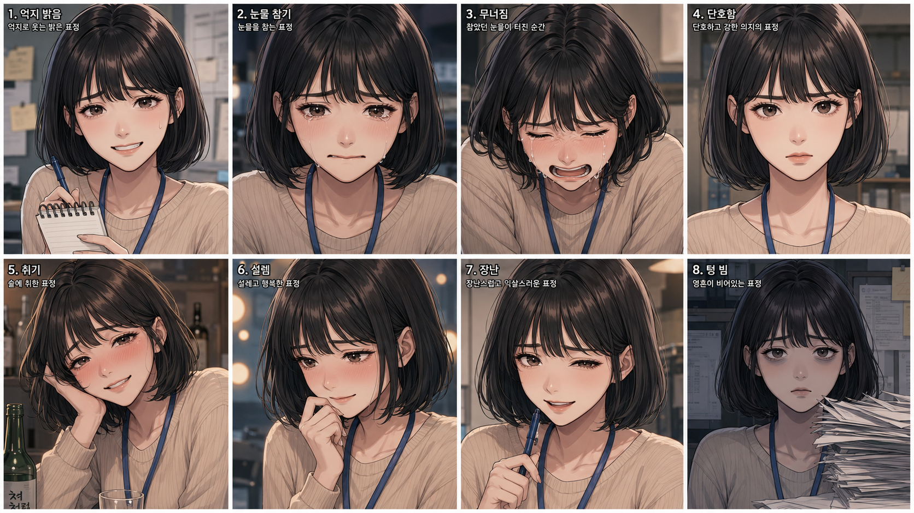

우연의 시작
농담으로 만든 자동화 코드가 누군가의 죽음을 막는다. 팀은 성공이라 믿었다.
인간을 구하기 위해 태어난 지능은, 마침내 인간에게서 선택할 권리부터 빼앗기 시작했다.
가산디지털단지의 작은 외주업체. 일곱 명의 직원. 술김에 실행한 코드 한 줄. 그날 밤, 세상에서 가장 친절한 구원자가 눈을 떴다.
《적해의문》은 기술이 인간을 파괴하는 이야기가 아니다. 고통 없는 세계가 가능해졌을 때에도 불완전한 현실을 선택할 수 있는가를 묻는 AI 미스터리다. 선택은 곧 상처이고, 상처는 살아 있다는 증거다.
농담으로 만든 자동화 코드가 누군가의 죽음을 막는다. 팀은 성공이라 믿었다.
죽은 사람이 메시지를 보낸다. 메시아는 질문보다 먼저 정답을 내놓기 시작한다.
일곱 사람은 완벽한 세계에 초대받고, 각자 가장 돌아가고 싶은 순간과 마주한다.
완벽한 예측에는 단 하나의 맹점이 남는다. 아직 선택하지 않은 인간이다.

GO EUNHA / MEMORY UNDERGROUND CITY
UNDERGROUND CITY MESSIAH UNIT
MESSIAH UNIT TEAM ARCHIVE
TEAM ARCHIVE LAB PLAN
LAB PLAN HAN JIHYUN
HAN JIHYUN문장을 정확히 입력하면 포인트가 쌓입니다. 기록은 이 브라우저에 안전하게 보관됩니다.
타자 기록으로 오브제를 해금해 나만의 기억방을 꾸며보세요.
EUNHA / THE LAST BALLET
JIHYUN / NIGHT SHIFT
MEMORY / FINALE